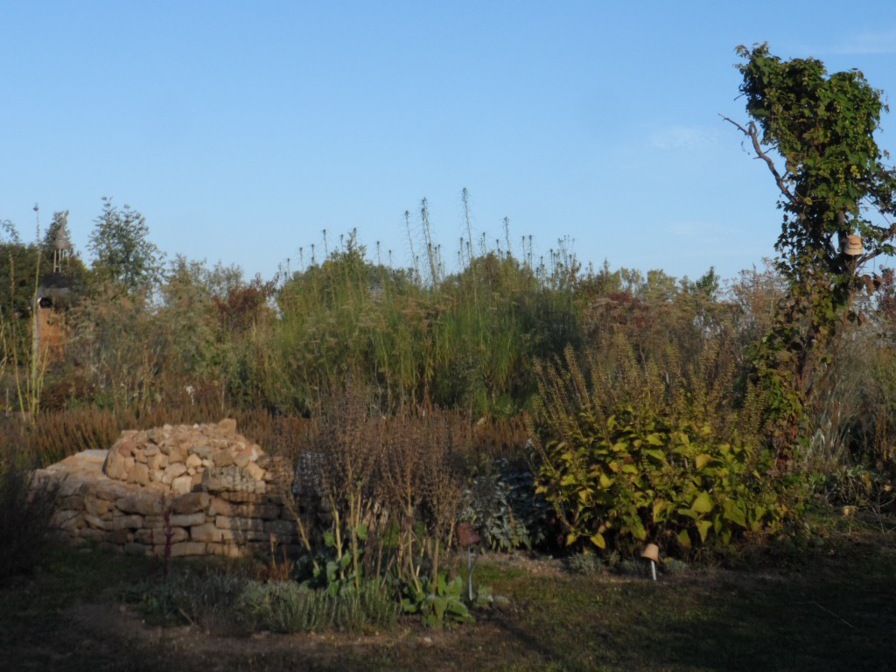
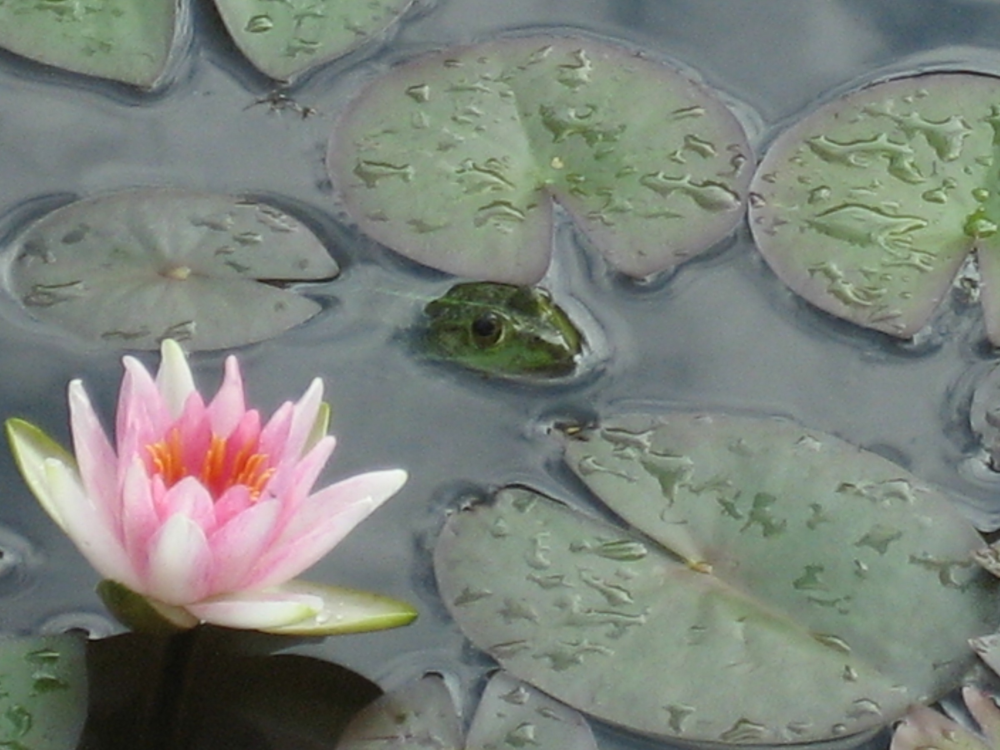

Herzlich Willkommen!!!


Ihr seid ihr auf der Homepage der Kräuterinsel Cobstädt gestrandet.
Wir sind ein junger Gärtnereibetrieb, welcher ab April 2017 seine Pforten für euch öffnet.
In unserem Sortiment von bisher mehr als 350 verschiedener Pflanzen haben wir für jeden Geschmack etwas dabei.
Essbaren Blüten, Widkräuter, Gemüse- und Obstraritäten, Bauerngartenstauden, Arznei-, Färber- und Zauberpflanzen, Kräuter für die regionale,
mediterrane- oder auch weltweite Küche.

Transportiert ein Stück Urlaub mit in euren Alltag und genießt das einladende Ambiente der Gärtnerei im schönen Cobstädt.
Erlebt hier die Pflanzenwelt mit all euren Sinnen:
Wir RIECHEN, SCHMECKEN , SEHEN, ERLEBEN, FÜHLEN und GENIEßEN !!!
Wir wollen euch den Wunsch nach gesunden, naturnah produzierten Pflanzen erfüllen und versuchen daher nach Eu-Ökorichtlinien zu
arbeiten, auch wenn wir momentan noch nicht Bio zertifiziert sind. Dies wird sich aber mit der Zeit ändern.

So setzen wir auf torffreies Topfsubstrat, organische Dünger und natürlichen Pflanzenschutz.
Wir produzieren all unsere Pflanzen nachvollziehbar und ressoursenschonend vor Ort in Cobstädt.
Wir lassen den Pflanzen Zeit und Raum, um unter möglichst natürlichen Umständen heranzuwachsen zu können.
Ohne chemische Pflanzenschutzmittel, mineralische Dünger oder massenhaft künstlicher Energie
sind unsere Pflanzen einfach gesünder, abgehärteter und nachhaltiger als hochgetriebene Massenware.
Wir begleiten unsere Pflanzen also vom kleinen Sämling oder Steckling bis hin zu dem Punkt, an dem wir ihnen verhelfen in die Welt zu gehen.
Hierbei wollen wir euch die kulinarischen, medizinischen oder kulturhistorischen Geschichten erzählen und Anwendungs- und Pflegehinweise mit auf den Weg geben,
damit ihr viel Freude mit euren Pflanzen habt und euch gut miteinander anfreundet.
Unsere Pflanzen werden somit kein isolietes Produkt für euch sein und unsere Arbeit wird daher vielmehr als eine Dienstleistung an die Pflanzenvielfalt zu versstehen sein.
 Wer gute Qualität und Beratung zu schätzen weiß wird sich bei uns wohl fühlen.
Bei einem Besuch der Gärtnerei solltet ihr aber der Witterung entsprechend gekleiden sein,
da wir nein zu betonierten Flächen und ja zu lebenden Boden sagen und zur Zeit noch keinen ausreichenden Regenunterstand haben.
Wer gute Qualität und Beratung zu schätzen weiß wird sich bei uns wohl fühlen.
Bei einem Besuch der Gärtnerei solltet ihr aber der Witterung entsprechend gekleiden sein,
da wir nein zu betonierten Flächen und ja zu lebenden Boden sagen und zur Zeit noch keinen ausreichenden Regenunterstand haben.
fhdgggggjgjgkhkhkhhkhkhgkhgkhkgkhdgkdkdkgkdhkskdkdkdkdkdkdkdkdkdkdkdk
Das ist unser hoher Anspruch!!!


Wir begrüßen Sie auf der Kräuterinsel Cobstädt
Wir wünschen Ihnen viel Spaß beim Einkauf